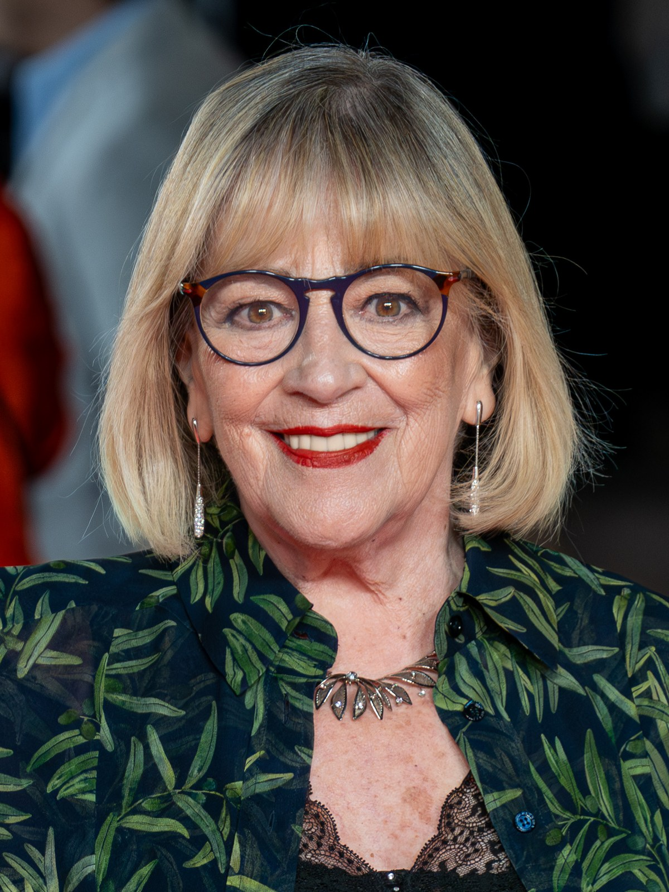
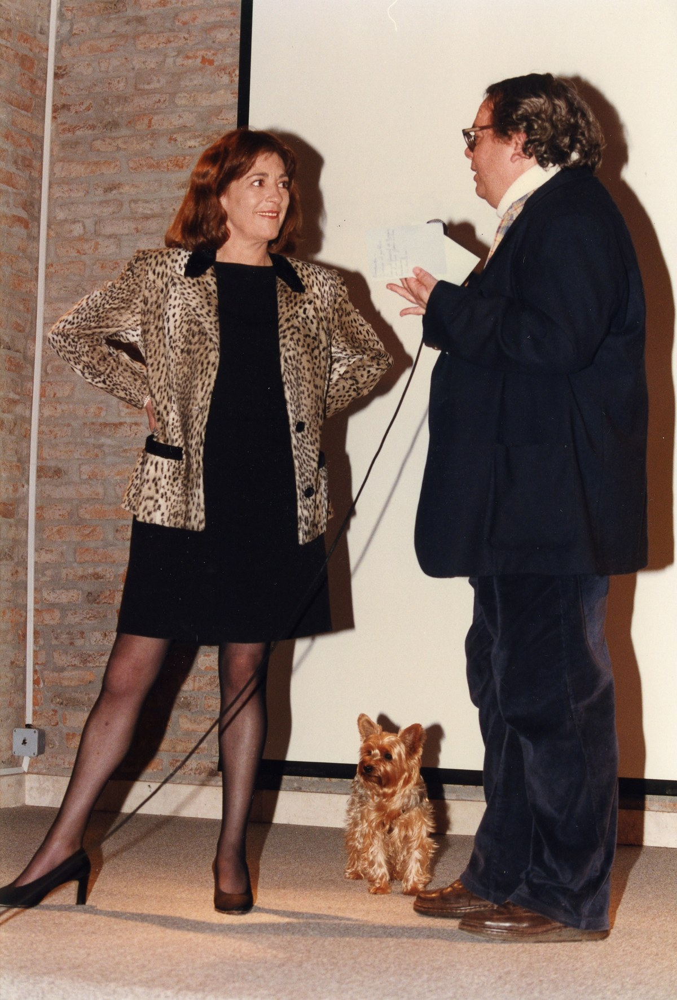
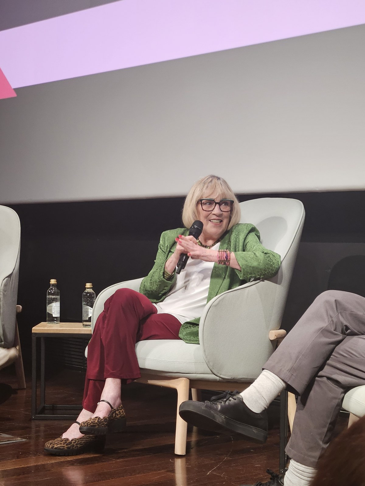
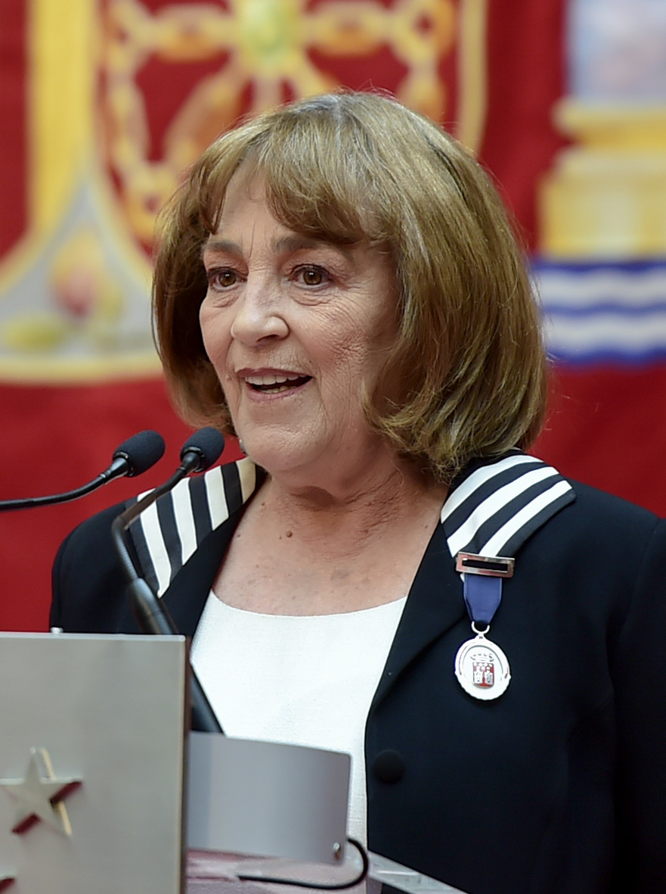

Carmen Maura Biography: Age, Movies, Awards, Net Worth and Family
She is the actress Pedro Almodóvar built his cinema around — and the only actress in Spanish film history to win the Goya for Best Actress three times. Carmen Maura, born in Madrid in 1945 into one of Spain’s great political families, began as a cabaret singer, became the face of the Movida, played a pregnant woman abandoned on the telephone in Women on the Verge of a Nervous Breakdown, a music-hall singer in the Spanish Civil War in ¡Ay, Carmela!, and a ghostly mother returning to her village in Volver. Across seven decades she has worked with Almodóvar, Carlos Saura, Álex de la Iglesia, Francis Ford Coppola and Amos Gitai, won at Cannes, the Césars and the European Film Awards, and is still acting at 81 — her latest film, Calle Málaga, premiered in 2025. She is the fifth Spanish celebrity on Stars of Europe, after Penélope Cruz, Javier Bardem, Antonio Banderas and Pedro Almodóvar — her director, her muse-maker, and the man she did not speak to for eighteen years.

Key takeaways
- Born 15 September 1945 in Madrid, age 81; her career runs from 1969 to the present and covers more than 140 film and television credits.
- She was Pedro Almodóvar’s first muse: his first feature, Pepi, Luci, Bom (1980), then five more films in the 1980s, a falling-out after Women on the Verge (1988), and a reunion eighteen years later in Volver (2006).
- She holds the record for most Goya Awards for Best Actress — three wins (1989, 1991, 2001), plus a fourth Goya, for Best Supporting Actress, for Volver (2007).
- She won Best Actress at Cannes in 2006, shared with the five other women of Volver, including Penélope Cruz.
- She also won the European Film Award for Best Actress twice (1988 and 1990), the César for Best Supporting Actress in 2012, and the European Film Academy’s Lifetime Achievement Award in 2018.
- No childhood photograph of her exists on Wikimedia Commons — the earliest free-licence photograph found is from 1997 — and no reliable net-worth figure exists, so none is given.
- With Maura, the Spanish section reaches five biographies, the same as Turkish, French and Italian.
Who Is Carmen Maura?
| Full name | María del Carmen García Maura |
|---|---|
| Date of birth | 15 September 1945 |
| Birthplace | Madrid, Spain |
| Nationality | Spanish |
| Profession | Actress |
| Years active | 1969–present |
| Spouse | Francisco Forteza (married 1964–1970) |
| Children | Carmen, Pablo |
| Net worth | Not stated — no reliable estimate found |
Carmen Maura is the most decorated actress in the history of Spanish cinema, and the one most closely tied to its most famous director. In a career that has spanned seven decades she has starred in films such as Women on the Verge of a Nervous Breakdown, ¡Ay, Carmela!, La comunidad (released in English as Common Wealth) and Volver, and she has worked with directors as different as Pedro Almodóvar, Carlos Saura, Álex de la Iglesia, Francis Ford Coppola, Amos Gitai and Étienne Chatiliez. She has won more Goya Awards for Best Actress than any other actress — three, for a total of four Goyas altogether — and she has won at Cannes, at the Césars and twice at the European Film Awards.
Her story is the story of modern Spanish cinema itself. She was born into an aristocratic, conservative family of lawyers and politicians, studied philosophy and literature in Paris, and came home to Madrid to sing in cabarets. She was already in her thirties, a divorced mother of two, when Fernando Colomo cast her in Tigres de papel (1977). Three years later a young, unknown director named Pedro Almodóvar gave her the lead in his first feature, and the two of them — the strong, funny, furious woman and the director who wrote women like no one else — changed Spanish film together. Then they fell out, and did not work together for eighteen years. When they finally reunited, in Volver, she played a dead mother who comes back, and the film’s six women shared the Best Actress prize at Cannes.
Age and Early Life — Madrid and the Maura Family
María del Carmen García Maura was born on 15 September 1945 in Madrid, the daughter of Salvador García y Santa-Cruz and Carmen Maura y Arenzana. She is 81 years old. Her family belonged to the Maura dynasty, one of the most prominent families in Spanish public life: her great-grandfather was the Count of Fuente Nueva de Arenzana, who lived in the Palace of Arenzana in Madrid, which is now the embassy of France; and her great-grandfather on her mother’s side was the artist Bartolomé Maura y Montaner, whose brother was the statesman Antonio Maura, five times prime minister of Spain — making Antonio Maura her great-great-uncle. It was a family of conservative lawyers, writers and politicians, and the theatre and politics were never far apart in it.
Maura studied philosophy and literature at the École des Beaux-Arts in Paris. From 1964 to 1970 she was married to the lawyer Francisco Forteza, and the couple had two children, Carmen and Pablo. She came back to Madrid and began her career not in film but on stage, as a cabaret singer, and then in television, where she worked through the late 1960s and 1970s in anthology drama series such as Novela and Estudio 1. Acting, for her, came late and almost by accident — and when it came, it came all at once.
From Cabaret Singer to Film
Maura’s first screen credit was the short film El espíritu in 1969. Her feature-film debut came the following year, in Alfonso Ungría’s The Man in Hiding (1971), in which she played Belén. Through the first half of the 1970s she took small roles in Spanish films — Jaime de Armiñán’s Un casto varón español, Juan Luis Buñuel’s Leonor, José Luis García Sánchez’s El love feroz — while continuing to work in television. The breakthrough came in 1977, when Fernando Colomo cast her in a major role in Tigres de papel (Paper Tigers), playing Carmen, the ex-wife of Juan. She was 32, and the film made her name in Spain.
The next few years established her as a comic actress of unusual range. She appeared in Carlos Saura’s Blindfolded Eyes (1978), in Fernando Colomo’s What’s a Girl Like You Doing in a Place Like This? (1978), and in Pilar Miró’s Gary Cooper, Who Art in Heaven (1980). She was often noted for her comedic roles, in films like Fernando Trueba’s Sal gorda (1984), Sé infiel y no mires con quién (1985) and José Luis Borau’s Tata mía (1986) — funny, sharp, working-class women who refused to be pitied. In 1981 she also became a television presenter, hosting the talk show Esta noche for 44 episodes, playing a deliberately naïve interviewer. It was a side of her the public loved: the same quick wit, turned on her guests.
What changed everything was a meeting in the Madrid theatre world. Maura and a young aspiring director named Pedro Almodóvar had both been cast in a stage production of Sartre’s Dirty Hands. Almodóvar was still making underground short films on Super 8. In 1978 she appeared in one of them, Folle... folle... fólleme Tim!. Two years later he asked her to star in his first feature film.
Almodóvar — His First Muse
Pepi, Luci, Bom y otras chicas del montón — Pepi, Luci, Bom and Other Girls on the Heap — was shot in 1980 for very little money, in the middle of the Movida, the explosion of music, art and nightlife that followed the death of Franco in 1975. Maura played Pepi, a young woman who sets out to take revenge on a policeman who raped her, and ends up in a tangle of punk singers, housewives and a masochistic housewife named Luci. The film was rough, rude and funny, and it announced both of them. Maura was 35. Almodóvar was 31. Neither of them had made a feature before.
They went on to make five more films together in the 1980s, and Maura became the centre of Almodóvar’s cinema: Sor Perdida, the nun with a past, in Dark Habits (1983); Gloria, the exhausted cleaning woman who kills her husband with a ham bone, in What Have I Done to Deserve This? (1984); Julia, in Matador (1986), alongside Antonio Banderas; and Tina Quintero in Law of Desire (1987), a transgender woman and former actress, a role for which Maura is still cited as a gay icon, and which fixed her image as a strong woman unafraid to break boundaries. The films were built around her — her timing, her anger, her refusal to play the victim — and Almodóvar has said more than once that his cinema learned to write women by watching her play them.
Then came the falling-out. After Women on the Verge of a Nervous Breakdown in 1988, Maura and Almodóvar appeared to have fallen out, and they did not work together for over a decade. The reasons were never fully explained in public, and both of them moved on: Almodóvar made his films with other actresses, and Maura worked steadily with other directors through the 1990s. It would be eighteen years before they made another film together. In total they collaborated eight times, from the 1978 short to Volver in 2006, over twenty-six years.


Women on the Verge — The Breakthrough
Mujeres al borde de un ataque de nervios — Women on the Verge of a Nervous Breakdown — opened in 1988, and it is still the film Maura is best known for outside Spain. She played Pepa, a voice-over actress whose lover, Iván, has left her, and who spends two frantic days trying to reach him by telephone, while her flat fills up with a friend who has shot her husband, a Shiite terrorist, a lawyer, and a pot of gazpacho spiked with sleeping pills. It is a farce played at full speed, and Pepa is its centre: furious, funny and heartbroken, sometimes all in the same sentence.
The film made Maura an international star. It won her the European Film Award for Best Actress — the Felix — and the Goya Award for Best Actress at the 1989 ceremony, her first Goya, and the Fotogramas de Plata for Best Movie Actress. It was the last film she and Almodóvar made together for eighteen years, and it set the pattern for everything that followed: the world now knew her as the face of the new Spanish cinema, the woman who could carry a comedy about despair and make it feel true.
The same year also showed how far her range reached beyond Almodóvar. In 1988 she had already played, in very different registers, the television presenter of Sal gorda, the mother in Tata mía, and the nun of Dark Habits. She was not a director’s muse in the narrow sense — she was a leading actress in her own right, and other directors wanted her for the same reasons Almodóvar did.
¡Ay, Carmela! and the 1990s
In 1990, Carlos Saura cast her as Carmela in ¡Ay, Carmela!, a music-hall singer and her partner Paulino, played by Andrés Pajares, who entertain the troops during the Spanish Civil War and are captured by Franco’s Nationalists. Carmela is funny, brave and doomed: she sings for the soldiers, refuses to perform for the fascists, and pays for it. The performance won Maura her second Goya for Best Actress at the 1991 ceremony, and her second European Film Award for Best Actress, in 1990. It remains, with Women on the Verge, one of the two performances that define her.
The 1990s were her busiest decade. She worked in Spain and in France, in comedy and in drama, and almost never stopped. There was Chatarra (1991) and Cómo ser mujer y no morir en el intento (1991), Gonzalo Suárez’s The Anonymous Queen (1992), Mario Camus’s Shadows in a Conflict (1993), for which she was nominated for a Goya, and Roger Planchon’s Louis, the Child King (1993), in which she played Anne of Austria. In France she starred in Étienne Chatiliez’s Happiness Is in the Field (1995), which brought her a César nomination for Best Supporting Actress in 1996, and in André Téchiné’s Alice and Martin (1998). In 1999 she was nominated for another Goya, for Lisbon, opposite Sergi López and Federico Luppi.
Television kept her just as busy. From 1998 to 1999 she starred as Olga in the series A las once en casa, for 65 episodes, a performance that won her the Fotogramas de Plata for Best TV Actress in 1999. She had been working in television since the 1960s, and she never treated it as a lesser form: some of her most popular work in Spain was on the small screen, in front of audiences who knew her as a presenter, a comic and a dramatic actress all at once.
La comunidad — The Third Goya
In 2000, Álex de la Iglesia cast her as Julia in La comunidad, released in English as Common Wealth. Julia is a real-estate agent who finds a dead man’s hidden fortune in a Madrid apartment block, and then has to survive her neighbours, who will kill for it. It is a black comedy and a thriller at the same time, and Maura carries it almost alone, moving from greed to terror to a kind of furious dignity. The performance won her the Silver Shell for Best Actress at the San Sebastián Film Festival in 2000, the Fotogramas de Plata for Best Movie Actress in 2001, and her third Goya for Best Actress at the 2001 ceremony — the record she still holds. No other actress has won the Goya for Best Actress three times.
She stayed with de la Iglesia afterwards, playing Laura, the mother of the boy at the centre of the story, in 800 Bullets (2002), and returning years later for Witching & Bitching (2013). She also worked with Alejandro Agresti in Valentín (2002), playing the grandmother, a performance nominated for a Silver Condor in Argentina, and with Amos Gitai in Free Zone (2005), alongside Natalie Portman. By now she was in her late fifties, and the roles had changed — mothers, grandmothers, survivors — but the centre of her acting had not: women who refuse to be pushed around, played with comedy that never turns into caricature.
Volver — The Reunion
In 2006, eighteen years after Women on the Verge, Maura and Almodóvar worked together again. Volver — the title means “to return” — is about Raimunda, played by Penélope Cruz, whose mother Irene, played by Maura, returns from the dead, or seems to, to the village of Almagro in La Mancha. Irene is a ghost with unfinished business: a murder, a fire, a daughter she failed. Maura plays her with a quiet warmth that is very different from the frantic Pepa of 1988 — an older woman, softer, but no less stubborn.
The film was a triumph. At the 2006 Cannes Film Festival, the Best Actress prize went not to one woman but to all six women of Volver together: Maura, Penélope Cruz, Lola Dueñas, Blanca Portillo, Yohana Cobo and Chus Lampreave. It was a collective award, and a fitting one, because the film is an ensemble — but it was also, unmistakably, Maura’s return. The following year she won her fourth Goya, for Best Supporting Actress, for Volver, at the 2007 ceremony. She was 61, and she had come back to the director who had made her famous, on equal terms, as his equal.
Volver also tied her story to the younger generation of Spanish stars on this site. Penélope Cruz, her co-star, was 32 when they made it, and the film’s Cannes prize is one of the proudest entries on both women’s records. Maura had been Almodóvar’s first muse; Cruz became his later one. Volver is the film where the two meet.
Later Career — France, Coppola and Still Working
After Volver, Maura worked more and more in France, where she had long been admired. She played the mother in Francis Ford Coppola’s Tetro (2009), a small but striking role in a film shot in Buenos Aires, and starred in Yasmina Reza’s Chicas (2010). In The Women on the 6th Floor (2010), she played María, a Spanish maid in 1960s Paris, opposite Fabrice Luchini — a warm, funny performance that won her the César Award for Best Supporting Actress in 2012, her first César win after a nomination in 1996. The same year she played Maria in Jérôme Enrico’s Paulette, a retired woman who turns to dealing hashish to make ends meet.
On television she took the role of Rosa in Las chicas de oro (2010), the Spanish version of The Golden Girls, playing the part created by Rose Nylund, for 26 episodes. She starred in the series Stamos okupa2 (2012) and Deudas (2021), appeared in the Netflix limited series Someone Has to Die (2020), and in 2024 played Julia in the Apple TV+ series Land of Women, alongside Eva Longoria. The honours kept coming: the Locarno Excellence Award in 2007, the Donostia Award — the lifetime achievement award of the San Sebastián Film Festival — in 2013, the European Film Academy’s Lifetime Achievement Award in 2018, and the Lifetime Achievement Award of the Spanish Actors and Actresses Union in 2019. In France she had been made a Knight of the Order of Arts and Letters in 1996, and in Spain she was made a Dame Grand Cross of the Civil Order of Alfonso X, the Wise, in 2015.


And she has not stopped. In 2025 she starred in Calle Málaga, directed by Maryam Touzani, playing María Ángeles, and in Crazy Old Lady, directed by Martín Mauregui, playing Alicia — a film she was still presenting on stage in October 2025, at the age of 80. Her career now runs from a short film in 1969 to films released in 2025: fifty-six years, seven decades, and more than 140 credits.
Personal Life
Maura has always kept her private life separate from her work, and she has said little about it in public. She was married to the lawyer Francisco Forteza from 1964 to 1970, and they had two children, Carmen and Pablo. Later she had a long relationship with Antonio Moreno Rubio, which ended in 1995, when she discovered that he had defrauded her — an episode that left her bankrupt. She rebuilt her life and her career afterwards, and she has never made a public drama of it; the facts are stated here plainly, as they are on her Wikipedia page, and left at that.
She lives in Madrid, and she has spent much of her working life between Spain and France, where she is as well known as she is at home. She has never chased Hollywood, and Hollywood has never quite known what to do with her: her cinema has always been European, her language Spanish and French, and her characters women who talk fast, feel deeply and refuse to apologise for either.
Awards
Maura’s honours, in brief: the Goya Award for Best Actress three times — for Women on the Verge of a Nervous Breakdown (1989 ceremony), ¡Ay, Carmela! (1991) and La comunidad (2001) — a record no other actress holds, plus the Goya for Best Supporting Actress for Volver (2007), with further Goya nominations for Shadows in a Conflict (1994) and Lisbon (2000); the Best Actress prize at the Cannes Film Festival in 2006, shared by the six women of Volver; the European Film Award for Best Actress in 1988 and 1990, and the European Film Academy’s Lifetime Achievement Award in 2018; the César Award for Best Supporting Actress in 2012 for The Women on the 6th Floor, after a César nomination in 1996; the Silver Shell for Best Actress at San Sebastián in 2000 and the Donostia Award in 2013; the Locarno Excellence Award in 2007; the Lifetime Achievement Award of the Spanish Actors and Actresses Union in 2019; and four Fotogramas de Plata for Best Movie Actress, in 1985, 1989, 1991 and 2001, plus two for Best TV Actress, in 1982 and 1999. She was made a Knight of the Order of Arts and Letters in France in 1996, and a Dame Grand Cross of the Civil Order of Alfonso X, the Wise, in Spain in 2015. She has never been nominated for an Academy Award — her honours are European, which is where her career belongs.


Filmography Highlights
| Year | Title | Notes |
|---|---|---|
| 1969 | El espíritu | Short; first screen credit |
| 1971 | The Man in Hiding | Feature debut; as Belén |
| 1977 | Tigres de papel | Breakthrough; Fernando Colomo |
| 1978 | Blindfolded Eyes | Carlos Saura |
| 1980 | Pepi, Luci, Bom and Other Girls on the Heap | Almodóvar’s first feature; as Pepi |
| 1980 | Gary Cooper, Who Art in Heaven | Pilar Miró |
| 1983 | Dark Habits | Almodóvar; as Sor Perdida |
| 1984 | What Have I Done to Deserve This? | Almodóvar; as Gloria |
| 1984 | Sal gorda | Fernando Trueba |
| 1986 | Matador | Almodóvar; with Banderas |
| 1987 | Law of Desire | Almodóvar; as Tina Quintero |
| 1988 | Women on the Verge of a Nervous Breakdown | Almodóvar; Goya + European Film Award |
| 1990 | ¡Ay, Carmela! | Carlos Saura; Goya + European Film Award |
| 1993 | Shadows in a Conflict | Goya nomination |
| 1995 | Happiness Is in the Field | Étienne Chatiliez; César nomination |
| 1998 | Alice and Martin | André Téchiné |
| 1999 | Lisbon | Goya nomination |
| 2000 | La comunidad | Álex de la Iglesia; third Goya |
| 2002 | 800 Bullets | Álex de la Iglesia; as Laura |
| 2002 | Valentín | Alejandro Agresti; Silver Condor nomination |
| 2005 | Free Zone | Amos Gitai; with Natalie Portman |
| 2006 | Volver | Almodóvar; Cannes Best Actress, Goya Supporting |
| 2009 | Tetro | Francis Ford Coppola |
| 2010 | The Women on the 6th Floor | César Best Supporting Actress 2012 |
| 2012 | Paulette | Jérôme Enrico |
| 2013 | Witching & Bitching | Álex de la Iglesia |
| 2025 | Calle Málaga | Maryam Touzani; as María Ángeles |
| 2025 | Crazy Old Lady | Martín Mauregui; as Alicia |
FAQs
How old is Carmen Maura?
Carmen Maura was born on 15 September 1945 in Madrid, and is 81 years old as of November 2026. Her career runs from 1969 to the present, and she is still acting: her latest films, Calle Málaga and Crazy Old Lady, were both released in 2025.
How many Goya Awards has Carmen Maura won?
Four. She won the Goya for Best Actress three times — for Women on the Verge of a Nervous Breakdown (1989 ceremony), ¡Ay, Carmela! (1991) and La comunidad (2001) — a record no other actress holds. She won a fourth Goya, for Best Supporting Actress, for Volver (2007).
Was Carmen Maura in Volver with Penélope Cruz?
Yes. In Pedro Almodóvar’s Volver (2006) Maura played Irene, the mother of Penélope Cruz’s Raimunda. At the 2006 Cannes Film Festival the Best Actress prize was shared by all six women of the film: Maura, Cruz, Lola Dueñas, Blanca Portillo, Yohana Cobo and Chus Lampreave. Read Cruz’s biography here.
Why did Carmen Maura and Pedro Almodóvar stop working together?
After Women on the Verge of a Nervous Breakdown (1988), Maura and Almodóvar appeared to have fallen out, and they did not make another film together for eighteen years, until Volver (2006). The reasons were never fully explained in public. In total they collaborated eight times, from a short film in 1978 to Volver, over twenty-six years. Read Almodóvar’s biography here.
Who are Carmen Maura’s children?
She has two children from her marriage to the lawyer Francisco Forteza (1964–1970): a daughter, Carmen, and a son, Pablo.
What is Carmen Maura’s net worth?
No reliable published estimate of Carmen Maura’s net worth was found, so no figure is given in this article, and she does not appear on this site’s Top 10 Richest Celebrities page. See the Top 10 Richest page for the current ranking.
Did Carmen Maura win an Oscar?
No. She has never been nominated for an Academy Award. Her highest honours are European: the Best Actress prize at Cannes in 2006, three Goya Awards for Best Actress, two European Film Awards for Best Actress, and a César for Best Supporting Actress.
Sources
Facts in this article were checked against: Wikipedia — Carmen Maura (born María del Carmen García Maura, 15 September 1945, Madrid; parents Salvador García y Santa-Cruz and Carmen Maura y Arenzana; great-grandfather Count of Fuente Nueva de Arenzana, Palace of Arenzana now the French embassy; great-grandfather Bartolomé Maura y Montaner, brother of statesman Antonio Maura, five-time prime minister; studied philosophy and literature at the École des Beaux-Arts, Paris; married Francisco Forteza 1964–1970, two children Carmen and Pablo; long relationship with Antonio Moreno Rubio ended 1995, fraud and bankruptcy; began as a cabaret singer; El espíritu 1969 short; The Man in Hiding 1970; Tigres de papel 1977; comedic roles Sal gorda, Sé infiel y no mires con quién, Tata mía; Esta noche 1981–82, 44 episodes; first Almodóvar film Pepi, Luci, Bom 1980; five further 1980s films; falling-out after Women on the Verge; reunion Volver 2006; 800 Bullets; gay icon for Law of Desire; most Goya Awards for Best Leading Actress; Locarno Excellence Award 2007; worked with Almodóvar, Coppola, Gitai, Reza, Agresti, Saura, Chatiliez and de la Iglesia; filmography and television tables; awards tables — Cannes Best Actress 2006, César nomination 1996 and win 2012, European Film Awards 1988, 1990 and Lifetime Achievement 2018, Goya wins 1989, 1991, 2001 and 2007 with nominations 1994 and 2000, San Sebastián Silver Shell 2000, Silver Condor nomination 2004, Fotogramas de Plata wins 1982, 1985, 1989, 1991, 1999 and 2001; honours — Knight of the Order of Arts and Letters 1996, Dame Grand Cross of the Civil Order of Alfonso X, the Wise, 2015; Donostia Award 2013; Actors and Actresses Union Lifetime Achievement Award 2019); TV Insider (eight Almodóvar films over twenty-six years; Calle Málaga 2026 credit); Encyclopedia.com (family background). No net-worth figure is given because no reliable estimate surfaced. All writing is original to Stars of Europe. Deliberately left out: the “Kevin Severson is her son” line on Wikipedia, which contradicts the same page; any single-figure net worth; the 1965/annulled marriage date from one encyclopedia; and gossip. Photographs used: the Málaga Film Festival 2026 portrait (CC BY-SA 4.0); the 1997 stage photograph (CC BY-SA 4.0); the 2019 Community of Madrid medal photograph (CC BY 2.0); and the October 2025 photograph presenting Crazy Old Lady (CC BY-SA 4.0) — each visually checked against the person named, and each licence confirmed on its Wikimedia Commons file page on 27 November 2026.